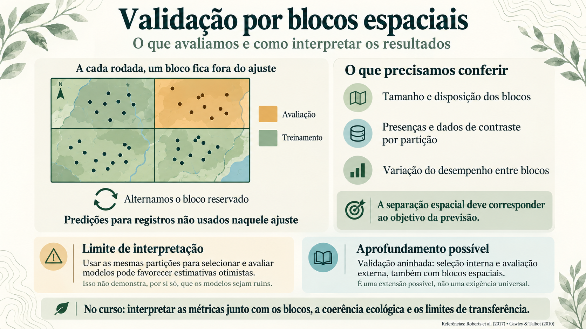

CAPÍTULO 09 · A · Assessment
Preparar treinamento e avaliação
A equipe constrói as partições espaciais e confere as amostras antes de comparar modelos.
Base no curso: slides 384–389; 380.
Os registros se concentram em alguns lugares. A equipe quer examinar o desempenho quando o ajuste e a avaliação ficam espacialmente separados. Abre o mapa dos blocos e confere se cada divisão contém informação suficiente.
Na validação cruzada, uma parte dos dados é reservada e o ajuste utiliza as demais. A separação espacial reduz a proximidade entre certos conjuntos e ajuda a avaliar a generalização para as condições representadas pelos blocos. O significado depende da grade e da distribuição dos registros.

presence.points.clean.filtered$pr_ab <- 1
n_groups <- 4
set.seed(1968)presence.points.partition <- part_sblock(
data = presence.points.clean.filtered, env_layer = predictors,
pr_ab = "pr_ab", x = "decimalLongitude", y = "decimalLatitude",
n_part = n_groups,
min_res_mult = 0.5/res(predictors.mask)[1],
max_res_mult = 10/res(predictors.mask)[1],
min_occ = ceiling(log2(nrow(presence.points.clean.filtered))),
num_grids = 20, prop = 1
)A saída fornece o conjunto particionado e a grade usada para amostrar os contrastes. O roteiro extrai os ambientes do background e das pseudoausências e padroniza os nomes das colunas. Assim, x, y, pr_ab e .part ficam associados aos preditores.
table(presence.points.model$.part)
table(background.points.model$.part)
table(pseudoabs.points.model$.part)Conferir o que cada bloco representa
A equipe examina tamanhos amostrais, posição dos blocos e cobertura ambiental. Uma partição com poucas ocorrências pode produzir grande variação nas métricas. Um ambiente pouco representado no treinamento ajuda a explicar dificuldades de transferência.
presence.points.partition$best_part_infoDepois de completar esse preparo, a equipe executa a seleção de variáveis descrita no capítulo 7. O roteiro utiliza as partições construídas para comparar configurações e selecionar os componentes da predição final. Os critérios ficam registrados junto aos resultados.